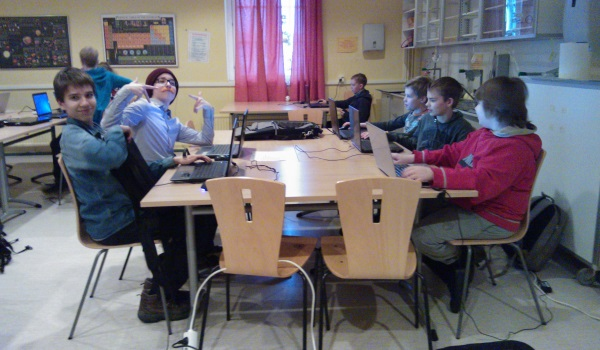

Tietomaa ja KoodiOulu järjestivät yhteistyössä Oulun ensimmäisen koko kevätlukukauden mittaisen koodikerhon keväällä 2015. Koodikerhossa opeteltiin ohjelmointia Java kielellä osallistujien toivomalla tavalla, tekemällä omaa peliä.
Koodikerho oli suunnattu peruskoululaisille jotka jo olivat hankkineet osaamista tietokoneen käyttöön. Ohjelmointiosaaminen ei kuitenkaan ollut alkuvaatimuksena. Osallistujien ikähaarukka vaihteli 9-14 vuoden välillä painottuen keskivaiheille. Suurimmalla osalla siis oli jo hyvät perusteen matematiikasta ja englannin kielestä jotka ovat ehdottoman tarpeellisia ohjelmoinnissa.

Kurssin sisältö oli suunniteltu sen mukaan, että osallistujat voisivat tehdä joko hyötyohjelmaa, nettisaittia tai peliä ja vieläpä hieman eri työkaluilla. Kaikilla osallistujilla kuitenkin oli toive saada tehdä peliä jonka johdosta työkaluksi valikoitui Greenfoot.
Greenfoot on Javan päälle rakennettu pelikirjasto jolla on helppo toteuttaa esimerkiksi näppäimistönluku ja pelihahmojen liikutus. Greenfoot on itsessään myös kehitystyökalu ja kääntäjä josta on karsittu pois ylimääräisiä toimintoja ja saatu pidettyä käyttöliittymä helppona käyttää ja oppia.
Kurssin aikana tutustuttiin Java kieleen, opeteltiin koodauksen perustermistöä kuten ohjemointirajapinta tai mitä tarkoittaa kääntäminen sekä tietysti harjoiteltiin ohjelmoinnin perusteita. Ohjelmoinnin perusrakenteista keskityttiin ehtolauseeseen sekä yllättävän vaikeaksi osoittautuneeseen asiaan, muuttujien käyttöön.
Grafiikkaa, ääniä ja musiikkia käytettiin ilmaisista nettipalveluista kuten Sprite Database.
Koodikerhossa valmistui kevään aikana seitsemän peliä. Jokainen kerholainen suunnitteli jonkin pelin itse. Kuitenkin osa teki pelin valmiiksi asti ryhmätyönä.
Kerhon lopuksi pelit esiteltiin huoltajille avointen ovien tilaisuudessa. Mukaan oli kutsuttu myös Oululehti joka kirjoittikin Pixels-pelistä mahtavan artikkelin.
Koodikerho oli kokonaisuudessaan hieno ja opettavainen kokemus. Korjattavaakin kyllä löytyi ja virheistä pitää ottaa oppia kun seuraavaa kerhoa suunnitellaan. Esimerkiksi vaikka Greenfoot on erinomainen ympäristö juuri Java kielen opetteluun, tuottavuus sen kanssa on niin alhainen ettei kerholaiset kerkeä toteuttamaan ideoitaan kun aika kuluu ohjelmakoodin ymmärtämiseen. Toinen, ei niinkään ongelma vaan lähinnä järjestelykysymys on, että jokaisella osallistujalla pitää olla mahdollisuus ottaa kaveri mukaan. Usein unohdettu puoli tietokoneiden käytössä on sosiaalinen kanssakäyminen joka on erittäin tärkeä, kukaan ei halua koodata yksin.